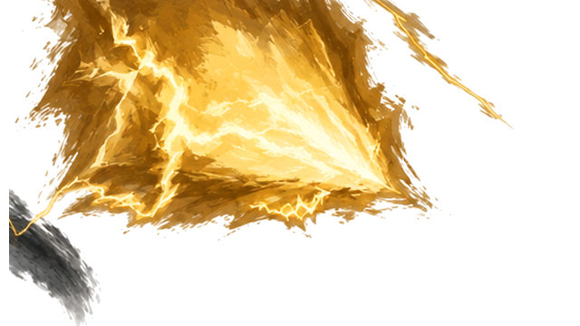
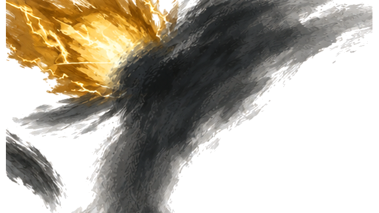
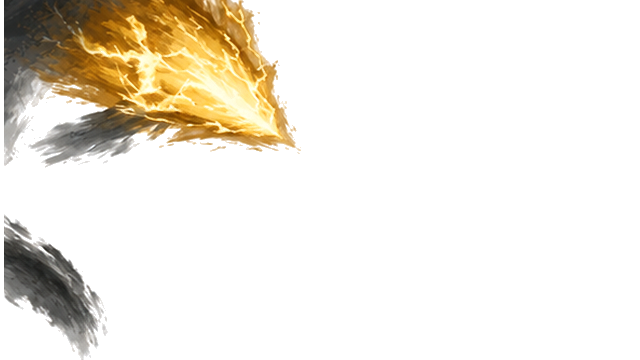
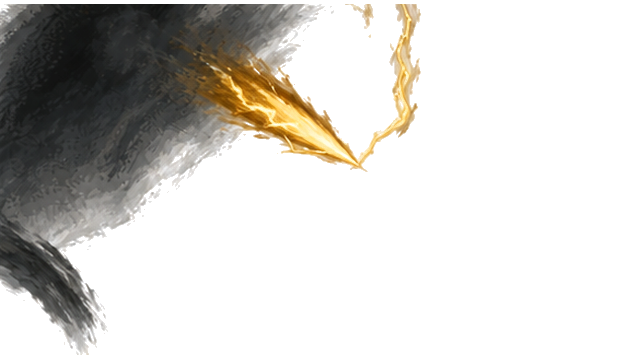
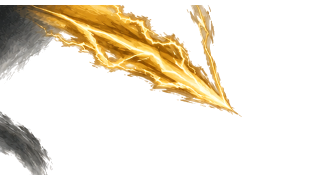

K33 · 原159 · Alpha层级 228

K33 · 原159 · Alpha层级 228

K34 · 原164 · Alpha层级 239

K35 · 原166 · Alpha层级 232

K36 · 原176 · Alpha层级 227

K37 · 原181 · Alpha层级 238

K38 · 原185 · Alpha层级 232

K39 · 原190 · Alpha层级 231

K40 · 原197 · Alpha层级 226